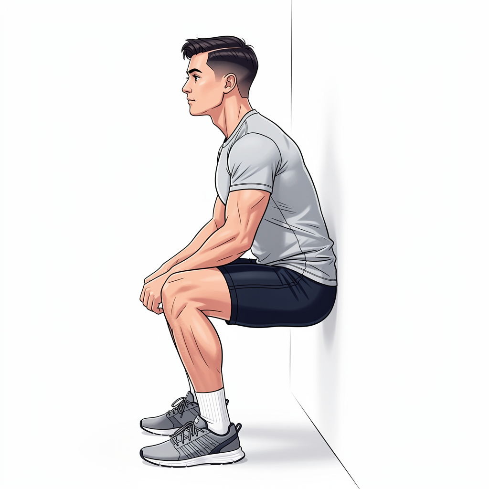

✦ REDESIGNED — Phase-Based + Annotations + Sticky Action
9:41
End
Guided Workout
⏸
Exercise 2 of 6
3:42

Flat back
90°
Knees behind toes
↓
Wall Sits
📖 How to
🔄 Set 1/3
⏱ 30 sec hold
💤 60s rest
STEP 1
Setup
STEP 2
Move
STEP 3
Return
Stand with back flat against wall, feet shoulder-width apart
Feet 2 feet from wall
📹
Form
🔄
Swap
⏭
Skip
✓ Complete Set 1